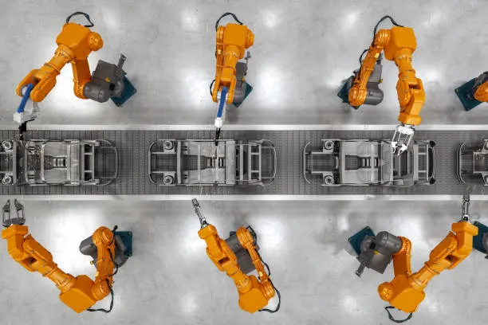

A aplicação do Controle PID para alcançar precisão na estabilização de drones e atuadores.
Entendendo a Necessidade
No GAIA Robótica, lidamos diariamente com um desafio fundamental: como fazer com que um robô atinja um objetivo de forma rápida, suave e sem ultrapassar a marca? Seja estabilizando o drone do projeto Eletroquad ou controlando braços robóticos na UFTM, o PID é a inteligência matemática que orquestra os motores baseando-se em sensores.
O Controle PID é a capacidade do robô de perceber o próprio erro e corrigi-lo de forma suave e precisa, como um motorista experiente a equilibrar o acelerador e o freio.
PID é um acrônimo para Proporcional, Integral e Derivativo . É um mecanismo de feedback (malha fechada) que calcula continuamente um valor de erro — a diferença entre o que você quer (Setpoint) e o que você tem (Process Variable) — e aplica uma correção baseada nestes três termos matemáticos.
As Três Parcelas: P, I e D
Para entender como a equação funciona na prática, vamos dividir a ação em três frentes principais que o controlador usa para domar o sistema físico.
P reage ao erro atual. I acumula o erro passado. D observa a velocidade com que o erro está mudando.
Sintonia de Ganhos no GAIA
No laboratório da UFTM, não existe um "valor mágico" para Kp, Ki e Kd que funcione em todos os robôs. A calibração (sintonia) é um processo de experimentação.
Muitas vezes utilizamos métodos matemáticos como Ziegler-Nichols para encontrar um ponto de partida, equilibrando velocidade de resposta e estabilidade do sistema.

Braços robóticos industriais dependem fortemente do controle PID para alcançar posições exatas na linha de montagem de forma rápida e sem colisões.
Discussão Técnica